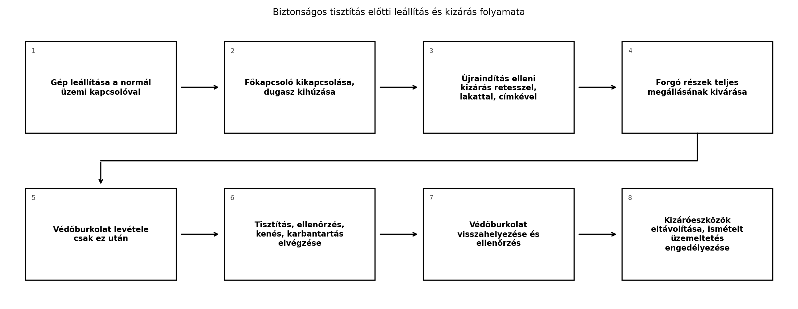

Egy hajnali műszakban a dagasztó üstje tele van tésztamaradékkal. A tanuló úgy gondolja, hogy mielőtt a gép teljesen leáll, egy ronggyal gyorsan letörli az üst belső falát. A forgókar ekkor még lassan forog, és a rongy beleakad a karba. A kéz is vele rántódik. Ez az egyik leggyakoribb gépbaleset a pékségben, és a legtöbbször elkerülhető lett volna egyetlen szabály betartásával: tisztítás és karbantartás előtt a gépet teljesen le kell állítani, áramtalanítani kell, és meg kell akadályozni, hogy valaki újraindítsa.
A pék nem gépész, de naponta ellenőriz, tisztít, ken, és sokszor észlel olyan rendellenességet, amit csak ő lát. Ha ezt jól teszi, a gép megbízható, és nem kerül idegen anyag a tésztába; ha rosszul, személyi sérülés vagy termékvisszavonás lehet a vége. Ebben az alfejezetben azt tanuljuk meg, hogyan kell a gépet biztonságosan leállítani tisztítás és karbantartás előtt, milyen karbantartási feladatokat végezhet a betanított pék, és hogyan dokumentáljuk a gépápolást és a hibákat.
A biztonságos tisztítás és karbantartás nem egyetlen kapcsoló megnyomásával kezdődik. A folyamatnak szigorú sorrendje van, és minden lépésre azért van szükség, mert az előző lépés kihagyása életveszélyes lehet. A következő folyamatábra a tisztítás előtti kötelező műveleteket mutatja.

A folyamat valójában egy „ki–le–zár–vár–engedélyezés” lánc: ahhoz, hogy valaki a gép veszélyes terébe nyúlhasson, a mozgási, villamos, sűrített levegős, hő- és gravitációs energiaforrásokat is biztonságos állapotba kell hozni. A dagasztógépnél például a kikapcsolás után a forgókar nem azonnal áll meg; a védőburkolat addig nem vehető le.
Definíció. Karbantartás: minden olyan műszaki, szervezési és karbantartási tevékenység, amely a munkaeszköz biztonságos, üzemképes állapotának fenntartását vagy helyreállítását szolgálja. Ide tartozik a napi gépápolás, a megelőző (tervezett) karbantartás, a tisztítás és a javítás is.
Szabály. Karbantartási szintek: - Napi gépápolás: a betanított gépkezelő (pék) által elvégzett, egyszerű, naponta ismétlődő feladat: a gép külső burkolatának letörlése, a tésztamaradék eltávolítása, a mozgó alkatrészek látható ellenőrzése, a reteszelések próbája, a kezelési utasításban a kezelőnek kijelölt kenőpontok kenése (ha van ilyen), a gép állapotának feljegyzése. Nem igényel szétszerelést, csak a kezelési utasításban megengedett műveleteket. - Megelőző (tervezett) karbantartás: előre meghatározott rendszerességgel (pl. heti, havi, üzemóra alapján) elvégzett ellenőrzés és szerviz: kenés, kopó alkatrészek állapotának felmérése, pótlása, kalibrálás. Ezt általában arra kiképzett karbantartó, gépész vagy külső szakszerviz végzi, a gyártó utasítása szerint (ellenőrizendő: az adott gép karbantartási terve). - Javítás: meghibásodás utáni helyreállítás. Villamos, hidraulikus, pneumatikus vagy teherviselő szerkezeti hibát a pék nem javíthat; ezt a munkavédelmi szabályok és a gépkönyv által meghatározott szakember végzi. A betanított pék a hibát észleli, jelenti, és a gépet letiltja.
Definíció. Kizárás (retesz, lakat, címke): olyan eljárás, amelynek során a gép energiaellátását lekapcsolják, és a kapcsolót vagy dugaszt mechanikus eszközzel (lakattal, kizáróretesszel, címkével) úgy rögzítik, hogy azt illetéktelenül ne lehessen visszakapcsolni. A kizárást csak az a személy oldhatja fel, aki elvégezte a munkát, miután meggyőződött arról, hogy minden védőburkolat visszakerült, és a gép indításához szükséges feltételek teljesülnek.
Szabály. Tisztítás és karbantartás előtti sorrend: 1. A gép leállítása a normál üzemi kapcsolóval. 2. Az energiaellátás megszakítása: főkapcsoló kikapcsolása, hálózati dugasz kihúzása, sűrített levegő, gőz vagy gáz lezárása, ahol van. 3. Újraindítás elleni kizárás (retesz, lakat, tiltó címke). 4. A mozgó részek teljes megállásáig várakozni. 5. A védőburkolat levétele csak ezt követően. 6. A munka elvégzése, majd a burkolat visszahelyezése és ellenőrzése. 7. A kizáróeszközök eltávolítása, ismételt üzemeltetés csak ezután.
Gépbiztonság. A védőburkolat kiiktatását, a biztonsági reteszelés áthidalását, a futó gépbe nyúlást, a lakat vagy címke nélküli tisztítást a szabályok kifejezetten tiltják. A retesz megkerülése gyakran azzal a tévhittel jár, hogy „csak egy másodpercre nyúlok be”. A forgó, záródó vagy hirtelen indítható gépelem súlyos csonkolásos vagy halálos balesetet okozhat. A villamos javítás, a hajtómű szétszerelése, a hidraulikatömlő cseréje és hasonló beavatkozás nem tartozik a pék feladatkörébe.
Definíció. Élelmiszeripari kenőanyag (H1): olyan kenőanyag, amely véletlen, technikailag elkerülhetetlen élelmiszerbe jutás esetén az élelmiszerre nem jelent egészségi kockázatot az élelmiszer-ipari felhasználásra vonatkozó nemzetközi minősítés szerint. A sütőüzemben a tésztával érintkező gépfelületek közelében csak ilyen, regisztrált és jelölt kenőanyag használható (pl. NSF H1 minősítés, ISO 21469 szerinti gyártói jelölés – ellenőrizendő: az aktuális minősítési gyakorlat és a gyártói adatlap). A kenőanyag tárolása és felhasználása során meg kell akadályozni, hogy csepp, zsírfolt, spray vagy szennyezett ecset kerüljön a tésztába.
Ez az ellenőrző lista a tisztítás, kenés, karbantartás előtti kötelező műveletek sorrendjét rögzíti. A lépéseket minden egyes gépnél el kell végezni, és a gépnaplóban be kell jegyezni, ha a lépést elvégeztük.
A kizárás eszközeit és menetét a lenti ábra mutatja. Az eszközök: (1) lakatolható főkapcsoló – „0” állásban ez választja le a gépet a hálózatról; (2) kizáró retesz több lyukkal, hogy minden ott dolgozó a saját lakatját tehesse fel; (3) személyre szóló lakat, amelynek kulcsa csak a dolgozónál van; (4) tiltó címke névvel, az elvégzendő munkával és a dátummal; (5) dugasz-kizáró tok a kihúzott dugaszhoz. A képsor A–F kockája az ellenőrzőlista 2–9. lépését sűríti: leállítás az üzemi STOP gombbal, leválasztás, retesz–lakat–címke, a megállás kivárása, indítási próba, majd munka, visszaállítás és feloldás.
Két pontra figyelj különösen. A vészleállító nem kizáróeszköz: megállítja a gépet, de nem választja le, és bárki kioldhatja – a lakat ezért a leválasztó főkapcsolóra vagy a dugaszra kerül. Az E kocka indítási próbája pedig azt ellenőrzi, hogy valóban a megfelelő gépet zártad-e ki: ha a gép az indítógombra elindul, a kizárás hibás, azonnal le kell állítani és jelenteni kell. A HTML-kiadásban a lépések egyenként lejátszhatók, a „Mi hiányzik?” nézetben pedig a kimaradt lépést kell megtalálni.
A gép külső felületeinek, tésztával érintkező részeinek biztonságos tisztítása, a mozgó alkatrészek ellenőrzése, a szükséges élelmiszeripari kenés elvégzése a termékbiztonság és a gép üzemképességének megőrzése érdekében.
A munka megkezdése előtt a pék mosson kezet, viseljen tiszta munkaruhát, hajhálót, és ne viseljen ékszert, órát vagy lelógó ruházatot. A kézen lévő seb legyen vízhatlanul fedve. A tisztításhoz használt kendőt, kaparót ne tegye le a nyers tésztás felületre; a szennyes kendőt azonnal tegye a külön erre kijelölt tartályba. A tisztítószeres munka után a felületet ivóvízzel le kell öblíteni, és hagyni kell megszáradni vagy tiszta, egyszer használatos kendővel áttörölni, hogy a tisztítószer ne maradjon az élelmiszerrel érintkező felületen.
HACCP. A napi tisztítás és kenés idegenanyag-szennyezést okozhat: a kenőanyag, a leoldott tésztamaradék, a kendőrost, a kaparó lepattant darabkája mind a tésztába kerülhet. Ezért a kenést a tésztakészítéstől elkülönítve, a lehető legkisebb mennyiséggel végezzük, és az élelmiszerrel érintkező felületeket a kenés után le kell törölni, hogy látható kenőanyagfilm ne maradjon. A tésztába került idegen anyag a vevőnél panaszt, termékvisszavonást okozhat; ezért a gép összeszerelésekor minden szerszámot és alkatrészt vissza kell helyezni, és a munka végén vizuálisan ellenőrizni kell a gép belsejét.
A gép tisztítása, kenése, karbantartása csak teljesen leállított, energiamentesített, újraindítás ellen kizárt gépen végezhető. A védőburkolatot csak akkor szabad levenni, ha a gép mozgó részei megálltak. A vészleállító gombot csak tényleges vészhelyzetben használjuk; a normál leállítás a normál stop nyomógombbal történik. A villamos csatlakozást, a motort, a vezérlést, a reteszelést nem javítja a pék; ha hibát észlel, a gépet letiltja és a karbantartónak jelzi. A sérült vezetéket, dugaszt, kapcsolót érinteni sem szabad; a hibát jelenteni kell.
Tilos. A futó gépbe bármilyen testrésszel benyúlni. A reteszelést áthidalni, a védőburkolatot kiiktatni, a lakat nélkül vagy a lakatot más nevében eltávolítva dolgozni szigorúan tilos. A gépbe idegen tárgyat (pl. seprűnyelet, kést) rakni azért, hogy a kapcsolót a tisztítás alatt ne lehessen visszakapcsolni, nem helyettesíti a megfelelő kizárást.
Tünet. A tészta bedagasztása után a felületen sárgásbarna, zsíros tapintású foltok láthatók. A foltok nem keverednek el, a tésztából kinyomva kenőanyag-szerű szaguk van. A termék sütés után is foltos marad, és a vevő idegen anyagot találhat.
Lehetséges okok. - A dagasztógép hajtóműve fölött vagy a kenőpont közelében a H1 kenőanyag túl lett kenve, és a tömítésen át a tésztatérbe cseppent. - Rossz kenőanyagot használtak (pl. gépzsír, olaj, nem H1 minősítésű univerzális kenőanyag). - A kenőanyagot a tésztával érintkező felületre vitték fel, vagy a kenőzsír ecsetje tésztával keveredett. - A gép tisztítása során a kenőanyag-maradékot nem távolították el, és az a következő dagasztáskor a tésztába keveredett.
Ellenőrzés. Nézd meg a gép kenőpontjait, a hajtóműházat, a tömítéseket. Keresd a friss kenőanyag-cseppeket. Nézd meg a kenőanyag tárolóját és a kenőeszközt; ellenőrizd, hogy a kenőanyag jelölése H1 minősítésű-e. Kérdezd meg a műszakot, ki végzett kenést, és mikor. Vizsgáld meg a tészta foltjait: ha a folt a gép kenőanyagával egyező színű és tapintású, nagy valószínűséggel gépkenésből származik.
Valódi ok. A napi kenést végző dolgozó a hajtómű kenőpontját a gyártói adagolásnál nagyobb mennyiséggel kente, és a felesleget nem törölte le. A dagasztás közben a melegedés hatására a felesleg a tömítés mellett a tésztatérbe szivárgott.
Javítás. A gép leállítása, energiamentesítése és kizárása után a tömítést, a kenőpontot és a tésztateret meg kell tisztítani, a felesleges kenőanyagot el kell távolítani. A kenést a gyártói adagolás szerint kell elvégezni, és a tömítés állapotát ellenőrizni kell. Ha a tömítés sérült, azt szakszerviznek kell cserélnie. A tésztát, ha kenőanyaggal szennyezett, le kell selejtezni; a termékbiztonság miatt nem szabad felhasználni.
Megelőzés. A kenőpontokat a gyártói kenési terv szerinti gyakorisággal és mennyiséggel kenjük (ellenőrizendő: gépkönyv), és a felesleget azonnal töröljük le. Csak H1 minősítésű, élelmiszeripari kenőanyagot használjunk. A kenési műveletet mindig jegyezzük be a gépnaplóba, hogy a következő műszak is lássa. A tömítések ellenőrzése legyen része a heti karbantartási listának.
Egy kis pékségben a kenyérsütő kemence melletti hosszformázó gép tisztítását a tanulóra bízták. A munkautasítás szerint a gép főkapcsolóját ki kellett kapcsolni, és a dugaszt ki kellett húzni. A tanuló csak a stop gombot nyomta meg, és mivel a hengerek már nem forogtak, benyúlt a tésztamaradékért. A gép azonban a következő adaghoz automatikusan indított, mert a retesz nem volt kizárva. A tanuló ujjai a hengerek közé szorultak, de a gyors vészleállító működtetésének és a szerencsés helyzetnek köszönhetően nem történt súlyos sérülés. A baleset kivizsgálása megállapította, hogy a gép energiamentesítése és kizárása kimaradt. Az üzem az eset után bevezette, hogy minden tisztítás és karbantartás előtt a dolgozó köteles a főkapcsolóra kizárólakatot és címkét helyezni, és csak azután nyúlhat a gépbe. Ez a szabály a későbbi műszakokban megelőzte a hasonló eseteket.
Tanulság. A gép bármilyen veszélyes terébe csak akkor szabad benyúlni, ha a gép energiamentesítése megtörtént, a mozgó részek megálltak, és az újraindítást kizártuk. A stop gomb önmagában nem elegendő; attól a gép még indítható.
| Ellenőrzési pont | Megfelelőség jele | Eltérés |
|---|---|---|
| Külső burkolat tisztasága | Nincs tészta, por, zsírfolt; a gép száraz | Lerakódott tészta, ragacsos felület |
| Élelmiszerrel érintkező felületek | Nincs látható kenőanyag, tisztítószer, kendőrost | Zsíros film, fehér tisztítószerfolt, szálak |
| Védőburkolat, reteszelés | Minden burkolat visszahelyezve, retesz működik; nyitott burkolatnál a gép nem indítható | Burkolat hiányzik, retesz kiiktatva |
| Gép működése próbaindításkor | Egyenletes járás, nincs idegen zaj, rezgés, szag | Szokatlan kopogás, égés-, melegedésszag |
| Gépnapló | Dátum, leírás, elvégzett munka, név, aláírás | Hiányzó vagy olvashatatlan bejegyzés |
A táblázat a napi gépápolás és tisztítás minőségi ellenőrzését foglalja össze. A tényleges ellenőrzőpontokat a pékség tisztítási és karbantartási terve, valamint a gép gyártói utasítása határozza meg (ellenőrizendő: az üzemi dokumentumok).
A válaszok a Megoldások elején találhatók.
1. feladat (A). Sorold fel a karbantartás három szintjét, és mindegyiknél írd le, ki végezheti a feladatot.
2. feladat (A). Írd le a tisztítás előtti energiaelszigetelés és kizárás négy lépését.
3. feladat (B). Egy dagasztógép napi ápolásakor a tanuló a gép leállítása után azonnal leveszi a védőburkolatot, és benyúl a még forgó dagasztókarba. Mi a hiba ebben a sorrendben? Írd át a műveletet a helyes sorrendben.
4. feladat (B). A gépnaplóba a tanuló ezt írta: „Ma kitakarítottam a dagasztót.” Mi hiányzik ebből a bejegyzésből? Írj egy teljes, szabályos bejegyzést a megadott adatokkal: dátum, gép, végzett művelet, megfigyelés, aláírás.
5. feladat (C). A tésztában sárgásbarna zsíros foltot találsz. Milyen lehetséges okokat vizsgálsz, és milyen sorrendben? Milyen javítást és megelőzést javasolsz?
6. feladat (D). A hosszformázó gép üzem előtti szemléjén, a vészleállító próbája során észleled, hogy a vészkapcsoló reteszelése nem működik: a kapcsoló nem pattan be, a gép nem áll le. Mi a teendőd? Írd le lépésről lépésre, kit értesítesz, mit írsz a naplóba.
7. feladat (D). Készíts egy egyszerű gépápolási naplóbejegyzést a következő adatokból: 2024. június 11., kenyérsütő kemence, napi tisztítás, a gőzölőrendszer fúvókáin enyhe vízkőlerakódás látható. Dátum, gép, művelet, észlelés, név, aláírás.
Önellenőrzés – válaszok
1. feladat (A) megoldás
2. feladat (A) megoldás
3. feladat (B) megoldás
A hiba: a tanuló a mozgó részek teljes megállása előtt levette a védőburkolatot, és energiamentesítés nélkül benyúlt a gépbe. Helyes sorrend: gép leállítása → főkapcsoló le, dugasz ki → kizárás lakattal, címkével → várakozás a mozgó részek megállásáig → védőburkolat levétele → tisztítás, ellenőrzés → burkolat visszahelyezése → kizárás feloldása.
4. feladat (B) megoldás
A bejegyzésből hiányzik: gép megnevezése, dátum, konkrét művelet, megfigyelés, aláírás. Szabályos bejegyzés:
5. feladat (C) megoldás
Vizsgálati sorrend: (1) a gép kenőpontjainak és a hajtómű tömítéseinek szemrevételezése; (2) a kenéshez használt anyag jelölésének ellenőrzése (H1-e); (3) a kenési időpont és a művelet bejegyzésének ellenőrzése; (4) a tészta foltjainak tapintása és szaga. Javítás: a szennyezett tésztát le kell selejtezni, a gépet meg kell tisztítani, a felesleges kenőanyagot eltávolítani, a sérült tömítést szakszervizzel cseréltetni. Megelőzés: a kenést kis mennyiségben, a kijelölt H1 kenőanyaggal végezni, a felesleget letörölni, a kenési műveletet a gépnaplóba bejegyezni.
6. feladat (D) megoldás
A vészleállító reteszelés hibája súlyos gépbiztonsági hiba, a gépet le kell tiltani. Lépések: (1) a gépet a normál stop nyomógombbal leállítani, ha lehetséges; (2) a főkapcsolót kikapcsolni, a dugaszt kihúzni, a gépet kizáróeszközzel ellátni; (3) a gépet „hibás, tilos használni” felirattal megjelölni; (4) a hibát azonnal jelezni a felettesnek és a karbantartónak; (5) a gépnaplóba bejegyezni a hiba pontos leírását, a dátumot, a gép megnevezését, a vészleállító reteszelési hibát; (6) a gépet csak a karbantartó javítása utáni visszaellenőrzés és a kizárás feloldása után szabad újra üzembe helyezni.
7. feladat (D) megoldás
A sütőüzemi gépek tisztítása, karbantartása és gépápolása során a legfontosabb szabály, hogy minden beavatkozás előtt a gépet le kell állítani, energiaellátását meg kell szakítani, és az újraindítást ki kell zárni lakattal, retesszel és tiltó címkével. A mozgó részek megállását ki kell várni, és csak azután szabad a védőburkolatot levenni. A karbantartásnak három szintje van: napi gépápolás (betanított pék), megelőző karbantartás (általában karbantartó) és javítás (szakember). A pék a napi tisztításhoz, ellenőrzéshez és a megengedett kenéshez csak H1 minősítésű élelmiszeripari kenőanyagot használhat, kis mennyiségben, a felesleget letörölve, az idegenanyag-veszély elkerülésére. Minden észlelt rendellenességet a gépápolási és hibanaplóba kell bejegyezni, a hibás gépet le kell tiltani, és a javítást szakembernek kell elvégeznie. A gépnapló rögzíti a műveletet, a megfigyelést, a dátumot és a felelős aláírását. Ezt a biztonsági rendet a későbbi Dagasztógépek biztonságos üzemeltetése, gépápolás és folytonos tésztakészítés és Nyújtógép, tésztalapító, gyártósorok és a feldolgozó asztal alfejezetek is használják, mert minden élelmiszeripari munkafolyamat a higiénia, a gépbiztonság és a dokumentálás együttes alkalmazásán alapul.